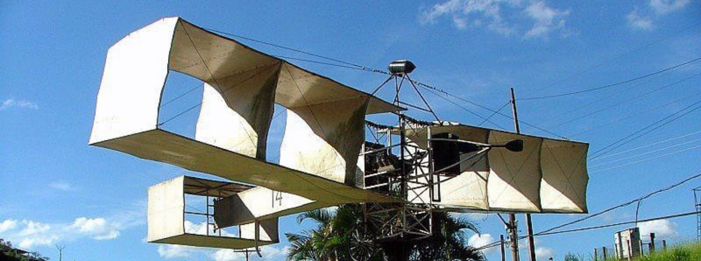
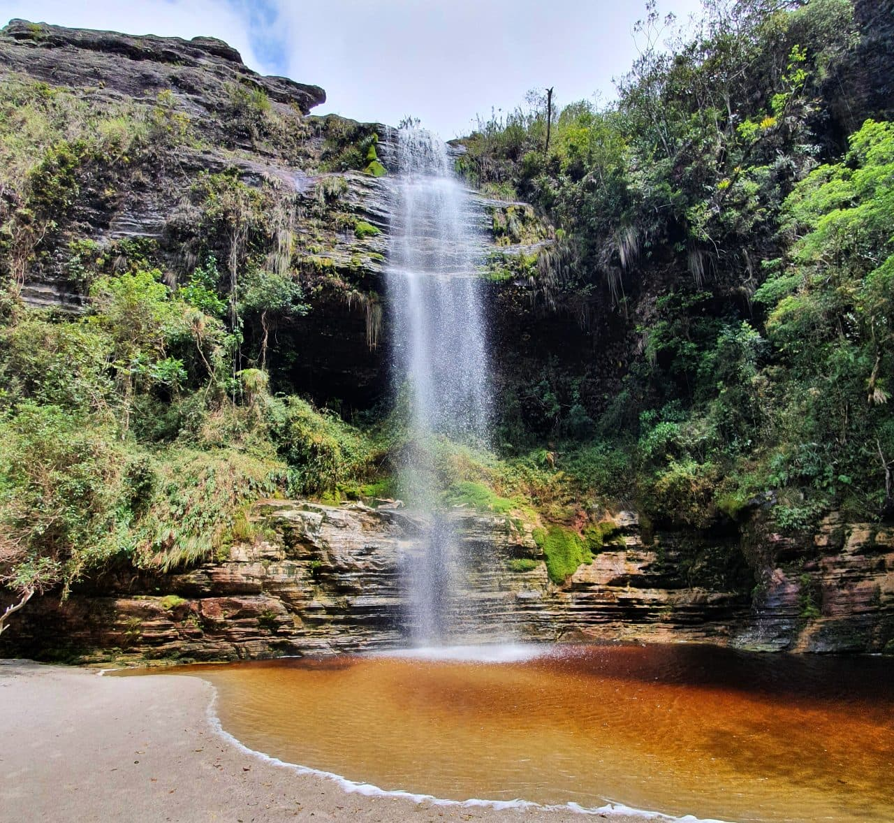

Viagem te proporciona experiencias. Algo que não pode ser apagado de suas
lembranças
Passeios
Uma boa viagem requer conhecer o lugar. O melhor jeito é através de passeios
feito por pessoas capacitadas
Garantia de pagamento
Temos um dos melhores e mais seguros metodo de pagamento. E caso tenha algum
imprevisto devolvemos seu dinheiro nos informando ate 7 dias antes da viagem
Bem-vindo ao "Tri Viagens" - o seu guia de viagens para
cidades pequenas!
Descubra o charme e a autenticidade das cidades pequenas ao explorar nosso site
dedicado a viagens fora do circuito turístico convencional. Se você está cansado das multidões e
deseja escapar para destinos encantadores, onde a cultura local floresce e os tesouros escondidos
esperam para serem descobertos, você veio ao lugar certo.
Nosso Grupo
Luisa Santos
CEO
Eriques Teodoro
CEO
Ana Carolina
CEO
Marliéria
Bem-vindo a Marliéria.
Bem-vindo a Marliéria, um tesouro escondido em meio às belezas naturais de Minas
Gerais!
Localizada no coração do estado, Marliéria é uma encantadora cidade de pequeno porte
que oferece aos visitantes uma experiência autêntica e relaxante. Rodeada por uma
paisagem deslumbrante, com colinas verdes e rios serpenteantes, esta joia escondida
é um refúgio perfeito para os amantes da natureza e para aqueles que procuram fugir
do ritmo acelerado das grandes cidades.
Um dos destaques de Marliéria é o Parque Estadual do Rio Doce, uma área de
preservação ambiental que abriga uma rica diversidade de fauna e flora. Os
visitantes podem explorar trilhas pitorescas, observar aves exóticas e desfrutar de
momentos de paz e tranquilidade cercados pela exuberante natureza. Não deixe de
fazer um passeio de barco pelo lago, apreciando a beleza das águas calmas e as
margens cobertas de vegetação.
Marliéria também é conhecida por sua hospitalidade calorosa e pela culinária típica
de Minas Gerais. Experimente pratos deliciosos, como o famoso feijão tropeiro, o
frango com quiabo e o tradicional pão de queijo, preparados com amor e ingredientes
frescos. Não deixe de visitar os pequenos restaurantes e bares locais, onde você
terá a oportunidade de provar os sabores autênticos da região.
Se você está em busca de uma experiência tranquila e genuína em meio à natureza
exuberante, Marliéria é o destino perfeito. Com sua atmosfera acolhedora, belezas
naturais deslumbrantes e rica herança cultural, esta cidade encantadora certamente
conquistará seu coração. Venha descobrir o que Marliéria tem a oferecer e deixe-se
levar pela magia deste destino único em Minas Gerais.
foto:
Parque Estadual do Rio Doce
Instagram do parque:
@parque.riodoce
Santos dummont
Onde a aviação nasceu

Santos Dumont, cidade localizada na região da Zona da Mata mineira, oferece aos seus
visitantes uma variedade de pontos turísticos encantadores. Entre os destaques,
estão o Museu de Santos Dumont, a Serra da Mantiqueira e a histórica Ponte Preta.
O Museu de Santos Dumont é um lugar imperdível para os entusiastas da aviação e da
história. Localizado na casa onde o renomado inventor brasileiro nasceu, o museu
exibe uma rica coleção de objetos pessoais, fotografias e documentos que contam a
fascinante vida de Santos Dumont. É possível explorar suas invenções pioneiras, como
o 14-Bis, e entender o impacto significativo que ele teve no desenvolvimento da
aviação.
A Serra da Mantiqueira, majestosa cadeia montanhosa que abraça a cidade, proporciona
uma experiência natural deslumbrante. Com suas paisagens exuberantes, trilhas e
cachoeiras, a Mantiqueira é um paraíso para os amantes da natureza e dos esportes ao
ar livre. Os visitantes podem se aventurar em caminhadas, escaladas e até mesmo voos
de parapente, desfrutando das deslumbrantes vistas panorâmicas da região.
Outro ponto de destaque é a histórica Ponte Preta, um marco arquitetônico da cidade.
Construída no século XIX, essa ponte de pedra é um testemunho da história e cultura
local. A Ponte Preta é conhecida por sua beleza e também por suas lendas e histórias
fascinantes que envolvem o local. Caminhar sobre essa estrutura centenária é como
voltar no tempo e apreciar a riqueza histórica da região.
Em Santos Dumont, o Museu de Santos Dumont, a Serra da Mantiqueira e a Ponte Preta
oferecem aos visitantes uma mistura única de história, natureza e cultura. Com esses
pontos turísticos encantadores, a cidade proporciona uma experiência memorável para
quem a visita, revelando o legado de Santos Dumont e a beleza de seu
entorno natural.
Ibitipoca
cidade das cachoeiras

Ibitipoca é uma região localizada no estado de Minas Gerais, Brasil, conhecida por
suas belezas naturais e pela presença do Parque Estadual do Ibitipoca. O Parque é
uma unidade de conservação criada em 1973 com o objetivo de proteger a rica
biodiversidade da região.Além das belezas naturais, Ibitipoca também possui uma rica
cultura local. A gastronomia típica da região inclui pratos como o feijão-tropeiro,
o leitão à pururuca e o famoso pão de queijo mineiro. A música e a dança folclórica
também desempenham um papel importante na cultura local.
Ibitipoca tem se tornado um destino popular para ecoturismo e turismo de aventura,
atraindo visitantes de todo o Brasil e do exterior. A região oferece diversas opções
de hospedagem, desde campings até pousadas de charme, proporcionando aos turistas
uma experiência única em meio à natureza exuberante de Ibitipoca.